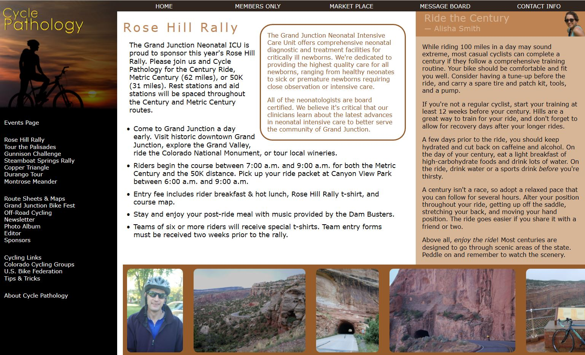
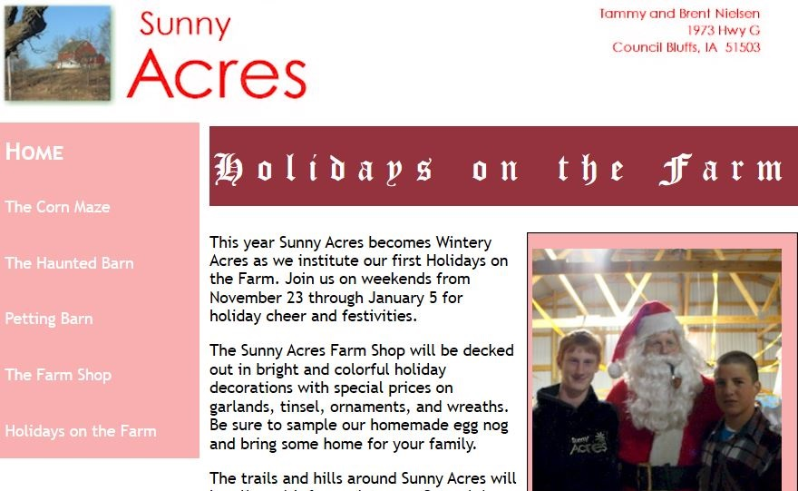
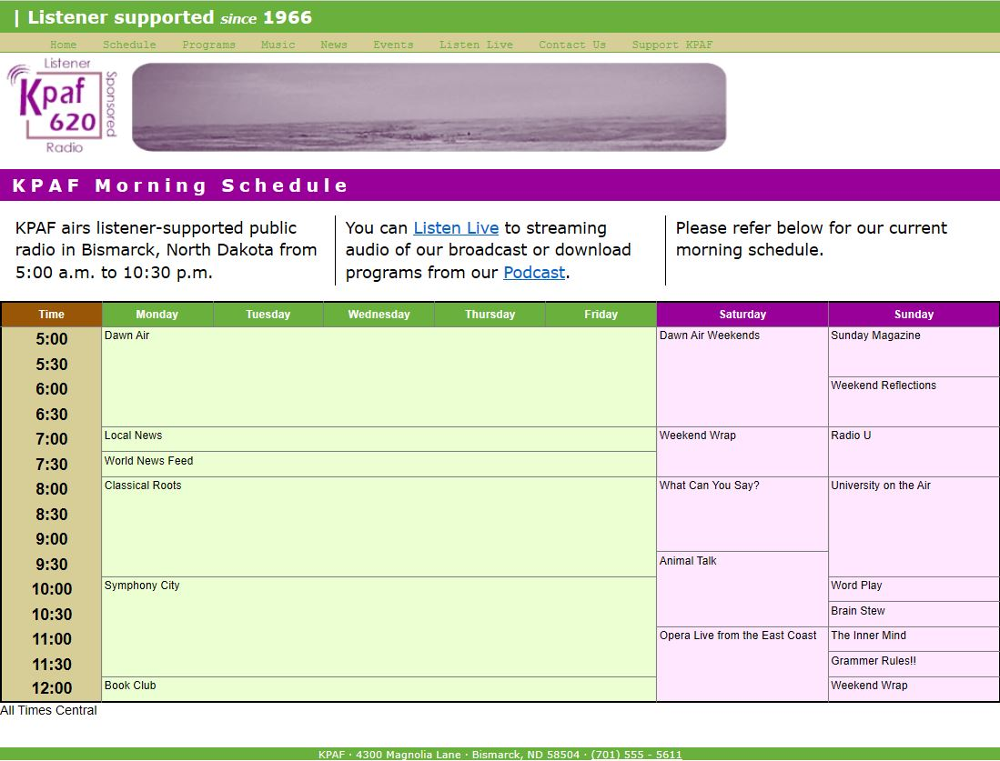

My Portfolio
|  |  |  |
|
Cycle Pathology This is a responsive website I was instructed to develop while taking an HTML class towards my bachelors degree! It is hosted on github pages. Please click the picture to view the website. Please click Here to see the repository! |
Sunny Acres This is a static website I was instructed to develop while taking an HTML class towards my bachelors degree! It is hosted on github pages. Please click the picture to view the website. Please click Here to see the repository! |
KPAF Radio Schedule This is a website containing a table I was instructed to develop while taking an HTML class towards my bachelors degree! It is hosted on github pages. Please click the picture to view the website. Please click Here to see the repository! |
Photos Of Me
About Me
Just living the dream! I am 25 years old and I have a family of 4. A son, a wife, and a daughter. I enjoy coding a few programs or websites in my spare time as well as playing the guitar. I currently live in San Antonio, TX and work for the United States Air Force. I'm taking classes towards a Bachelors in Computer Programming Technology. I don't know where life will take us next, but one thing I know for sure is I will always be learning new code. I love it!
Technical Skills
Python
HTML/CSS
Javascript